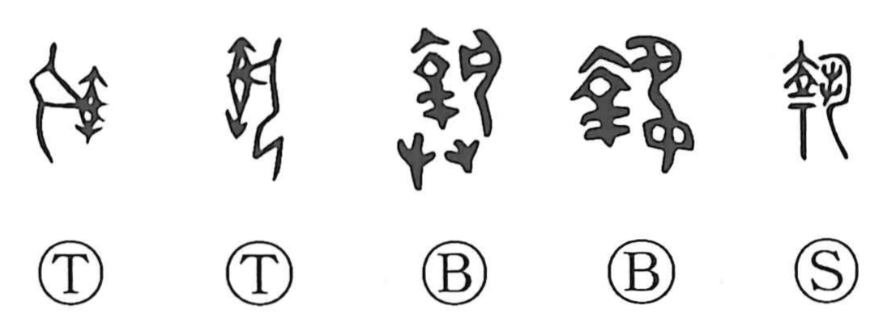

執

Kun: toru, toraeru | On: shitsu, shuu
to hold ・ to seize ・ to capture ・ to take ・ to execute ・ to perform
Explanation
This character is a compound of 幸 and 丸. In ancient forms, 幸 depicted the manacles that fasten both hands, while 丸 showed the two hands stretched out. Joined together they portray hands bound with shackles—an instrument of punishment—giving the sense of seizing or arresting a culprit. From this core idea it broadened to mean catching or taking hold, and further to taking something in hand. In compounds such as 執行 and 執務 it naturally extends to the sense of carrying out, conducting, or performing duties and ceremonies.